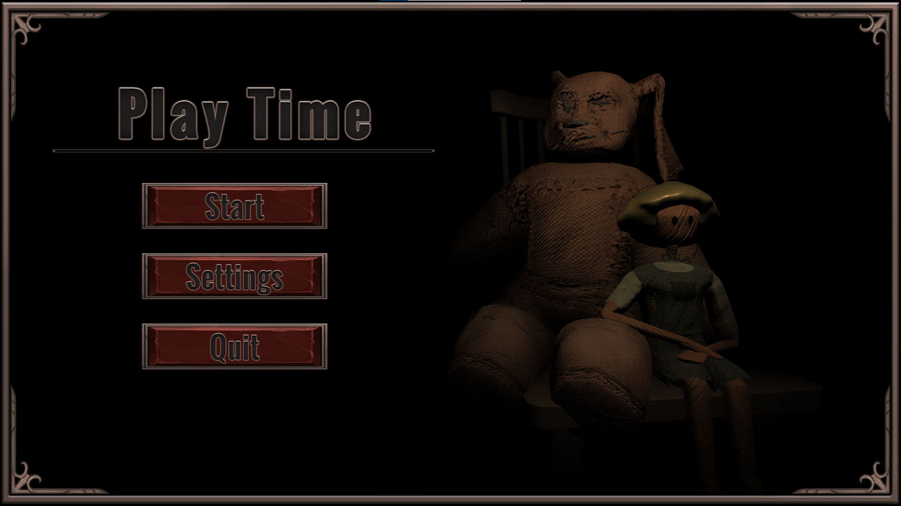
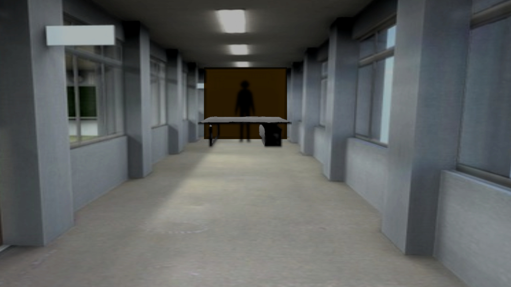

All of the following songs were written, produced, mixed, and mastered by me. They each were created in Cubase, with some sound editing done in Audacity.
The following are a few eerie songs I created for the game "Play Time", a single-player horror-platformer where you play as a doll named Lemon whose goal is to escape his toy chest. "Play Time" is a prototype created as my team's capstone project for UCI's Computer Game Science program. I was the composer and sound designer on the project, collecting and editing all in-game sounds, and you can play the game for yourself here.
These two tracks both set an intense, frightening tone for important story segments of the student-created visual novel "Beyond The Reflection". They use simple, yet noticeable instruments to create a mood without robbing players of their focus on the story.
The following are instrumentals I've created for my hip-hop music. The first is for "Aye, Yuh!" It uses a heavy kick, simple guitar melody, and an intense synth to create an epic and bombastic sound. The second is for "Atropos", and uses a simplistic buildup of instruments to create a sense of tension and dread.